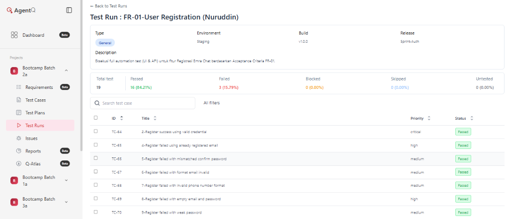
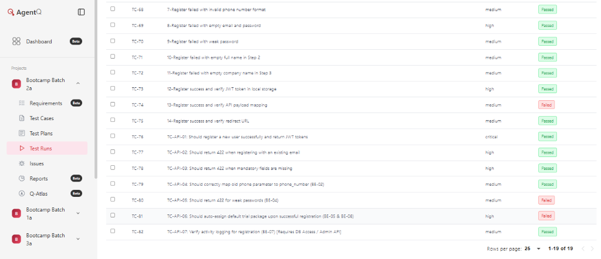
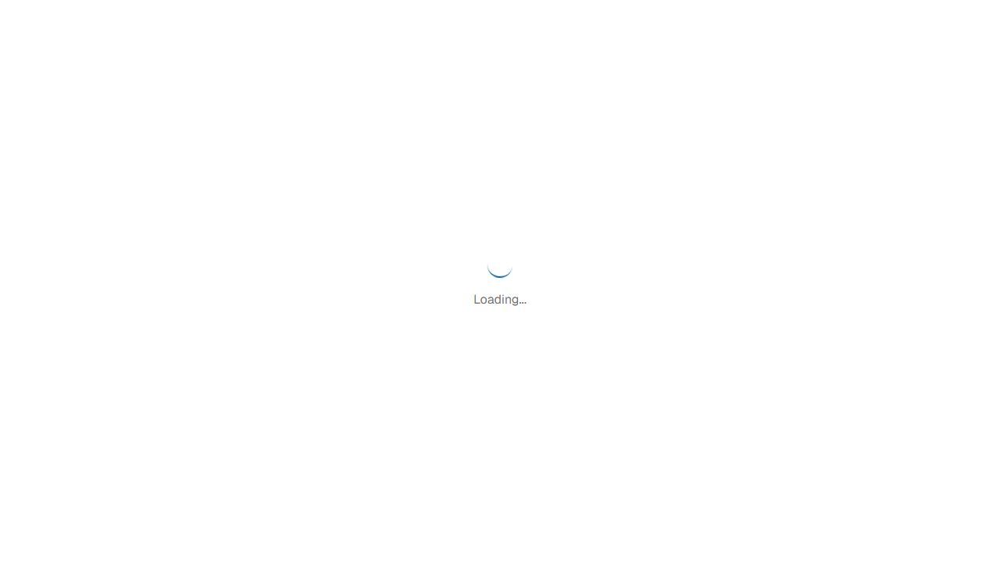
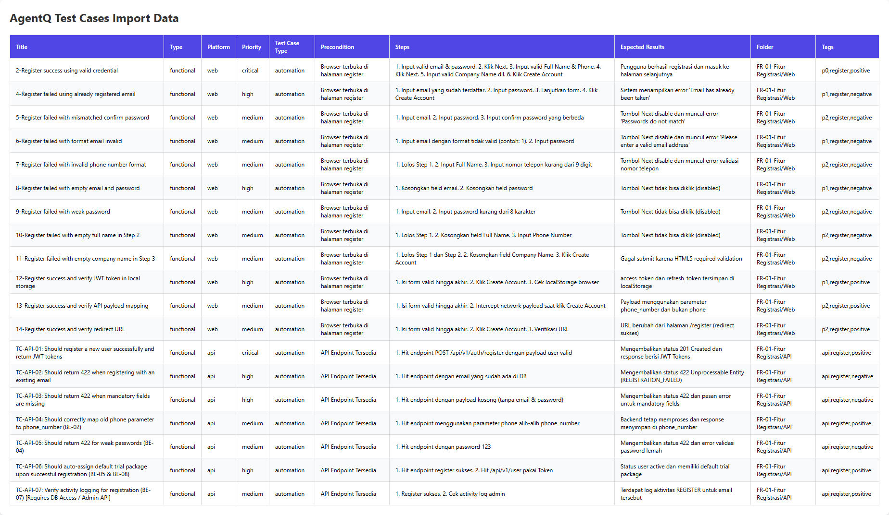

Emra Chat – Sprint Authentication Module 28 Juli 2026
| Project | Emra Web App |
|---|---|
| Sprint / Release | R2026.1 |
| User Story | US-01 – Registrasi via Email & Password - Nuruddin |
| Environment | Staging |
| Framework | Playwright + TypeScript |
| QA Engineer | Nuruddin |
| Date Prepared | 28 Juli 2026 |
| Version | 1.0 |
| STATUS | SEMUA 19 TEST CASE TELAH DIEKSEKUSI – SIAP SIGN-OFF |
|---|
Dokumen ini merupakan laporan resmi QA Sign-Off untuk User Story US-01 (Fitur Registrasi) pada aplikasi Emra Chat. Seluruh 19 test case automation telah dieksekusi melalui Playwright dan hasilnya diverifikasi menggunakan AgentQ.
Pengujian mencakup skenario fungsional (16 TC) dan integrasi API (3 TC), dengan distribusi skenario positif, negatif, dan edge case. Pengujian dilakukan sepenuhnya menggunakan automation pada platform Web dan API.
Automation Testing (In Scope):
Out Of Scope:
| Metric | Total | Critical | High | Others |
|---|---|---|---|---|
| Test Cases | 19 | 2 | 11 | 6 |
| Execution Type | Manual: 0 | Auto: 19 | 100% auto | |
| Test Type | Func: 16 | Integ: 3 | Sec: 0 | |
| Scenario Coverage | Positive: 6 | Negative: 11 | Edge: 2 |
US-01 — Register | Total: 19 TC | Manual: 0 | Automation: 19
| No | Title | Type | Platform | Priority | Exec | Tag | Result |
|---|---|---|---|---|---|---|---|
| 1 | Register success using valid credential | Functional | Web | Critical | Auto | Positive | PASS ✅ |
| 2 | Register failed using already registered email | Functional | Web | High | Auto | Negative | PASS ✅ |
| 3 | Register failed with mismatched confirm password | Functional | Web | High | Auto | Negative | PASS ✅ |
| 4 | Register failed with format email invalid | Functional | Web | Medium | Auto | Negative | PASS ✅ |
| 5 | Register failed with invalid phone number format | Functional | Web | Medium | Auto | Negative | PASS ✅ |
| 6 | Register failed with empty email and password | Functional | Web | High | Auto | Negative | PASS ✅ |
| 7 | Register failed with weak password | Functional | Web | High | Auto | Negative | PASS ✅ |
| 8 | Register failed with empty full name in Step 2 | Functional | Web | High | Auto | Negative | PASS ✅ |
| 9 | Register failed with empty company name in Step 3 | Functional | Web | High | Auto | Negative | PASS ✅ |
| 10 | Register success and verify JWT token in local storage | Integration | Web | High | Auto | Positive | PASS ✅ |
| 11 | Register success and verify API payload mapping | Integration | Web | High | Auto | Positive | FAIL ❌ |
| 12 | Register success and verify redirect URL | Functional | Web | Medium | Auto | Positive | PASS ✅ |
| 13 | Should register a new user successfully and return JWT tokens | Functional | API | Critical | Auto | Positive | PASS ✅ |
| 14 | Should return 422 when registering with an existing email | Functional | API | High | Auto | Negative | PASS ✅ |
| 15 | Should return 422 when mandatory fields are missing | Functional | API | High | Auto | Negative | PASS ✅ |
| 16 | Should correctly map old phone parameter to phone_number | Functional | API | Medium | Auto | Edge | PASS ✅ |
| 17 | Should return 422 for weak passwords | Functional | API | Medium | Auto | Negative | FAIL ❌ |
| 18 | Should auto-assign default trial package upon successful registration | Functional | API | High | Auto | Positive | FAIL ❌ |
| 19 | Verify activity logging for registration | Integration | API | Medium | Auto | Edge | PASS ✅ |
Terdapat 1 defect (bug) yang dilaporkan dan membutuhkan perbaikan, namun tidak secara fatal memblokir alur utama jika pengguna melengkapi form secara penuh.
required) padahal di spesifikasi RFC Backend field tersebut bersifat opsional.phone tidak sesuai dengan ekspektasi payload phone_number.⌠FAILED (Red) (Hal ini expected/wajar, karena pipeline berhasil menangkap bug pada field Company Name dan Payload Mapping. Otomatisasi berjalan sesuai dengan yang diharapkan).| Area / Bug Summary | Severity | Impact | Status |
|---|---|---|---|
| Bug Frontend UI: Field Company Name menggunakan validasi wajib HTML5 yang menahan form disubmit. | Medium | User tidak bisa mendaftar jika form dikosongkan, padahal secara kontrak RFC dikategorikan opsional. Membingungkan UX. | Open. Harus disesuaikan menjadi opsional di Frontend. |
API Mapping: Terjadi mismatch payload phone vs phone_number saat request POST registrasi. |
High | Miskomunikasi kontrak data API antara Frontend dan Backend yang dapat menyebabkan kegagalan pencatatan data pengguna. | Open. Backend harus memperbaiki parameter penerimaan. |
| Security API: Sistem API menerima password sangat lemah (123) dan merespon sukses (201). | Critical | Risiko keamanan fatal. Sistem melanggar security API contract, membiarkan akun rentan dibobol. | Open. Validasi keamanan password wajib diperbaiki sebelum rilis. |
Berdasarkan kesimpulan NO-GO dan pelaporan bug di atas, persetujuan bersyarat diberikan agar tim Developer segera menindaklanjuti temuan tersebut. Dengan menandatangani dokumen ini, seluruh pihak menyatakan bahwa:
| Prepared By | Reviewed By | Approved By |
|---|---|---|
| QA Engineer | QA Lead | Product Manager |
| Signature: Nuruddin | Signature: Fadhli Maulidri | Signature: Tim PM Emra Chat |
| Date: 28 Juli 2026 | Date: _______________ | Date: _______________ |
(Wajib dilampirkan sebelum penyerahan dokumen)



1) 80-TC-API-05: Should return 422 for weak passwords (BE-04)
Error: expect(received).toBe(expected)
Expected: 422
Received: 201 (Bug: Sistem menerima password lemah)
2) 81-TC-API-06: Should auto-assign default trial package (BE-05 & BE-08)
Error: expect(received).toBe(expected)
Expected: "active"
Received: undefined (Bug: Status user tidak dikembalikan sebagai active)
